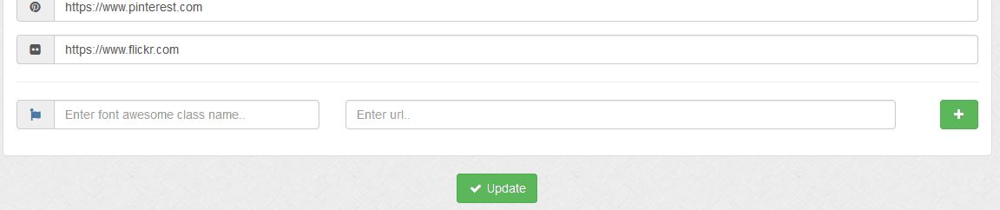

Various settings related to social sharing options.
Comments > Disqus Shortname
Enables people to comment on your journal/blog entries if enabled. Enter disqus short name. More info on the Disqus system here.
Comments > Disqus Category ID
Enter disqus category ID if required. This can be left blank.
Twitter API > Twitter Consumer key
For Twitter API integration. Enter Twitter API consumer key. Sign up for credentials here, then enter details here and below.
Twitter API > Twitter Consumer Secret
Enter Twitter API consumer secret key.
Twitter API > Twitter Access Token
Enter Twitter API access token.
Twitter API > Twitter Access Token Secret
Enter Twitter API access token secret
Twitter API > Twitter Username
If you have a Twitter page, enter your Twitter username. This is not required for the API.
Links
Here you can add social links. You can add as many as you need, but links should not be duplicated. Duplicates will be removed. Too add new links do the following:
1 In the first box enter the Font Awesome class name. This software currently supports v4* only. Click the icon or visit Font Awesome.
2 In the second box enter the full url starting http/https to your site.
3 Click the button to add link to list
4 Click 'Update' to save.

To remove links, leave url box blank, click update and refresh screen. Links with blank urls will be removed. If you don`t like any icons
on default links, you need to remove them and add them again.
Other Options > AddThis Social Sharing Code
Social plugin that adds social share buttons to your journal entries. It is recommended you utilise the power of social networks. More info on AddThis here.
Other Options > Enable Twitter Cards
For direct link sharing on Twitter. Recommended.
Other Options > Enable Facebook Open Graph Meta Tags